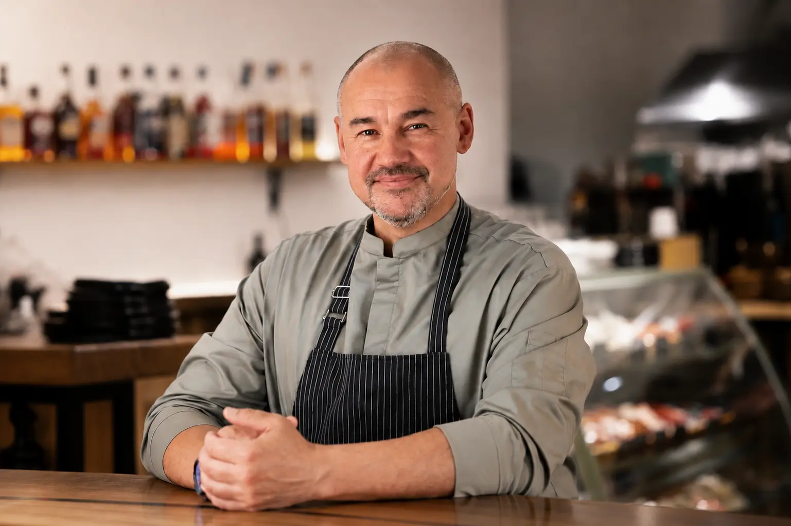

madeysergeiОснователь и генеральный директор
Сергей Мадей
Сергей Мадей — основатель ресторана и бренд-шеф компании VESTA.
Прошел профессиональное обучение в Basque Culinary Center в Сан-Себастьяне, где изучал современные кулинарные техники под руководством шеф-поваров Мартина Берасатеги, обладателя нескольких звезд Michelin, регулярно входящего в число ведущих мировых шеф-поваров по версии авторитетных гастрономических рейтингов, и Хуана Мари Арсака, Arzak Restaurant. Оба — признанные мастера испанской кухни, отмеченные звездами гида Michelin.
Регулярно проходит и проводит профессиональные стажировки и мастер-классы в странах Европы и Ближнего Востока, участвует в международных отраслевых выставках в Милане, ОАЭ, Иране и Грузии. Помимо собственных проектов, занимается ресторанным консалтингом в России и за рубежом.